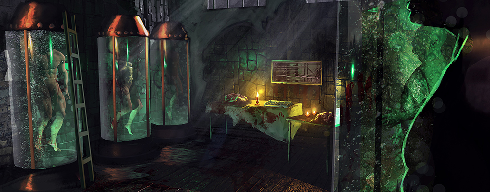

There has been an indisputable rise in the number of Venetians suffering mental breakdown following the advent of the Rent in the Sky. It is widely accepted across
the city that the unnatural phenomenon preys upon the mind, as does the sleeplessness and tension brought about by the change in the city’s inhabitants. What
only a relative few understand is that there exists a direct correlation between the new influx of magic and the affect on the human mind.
The link between madness and magic was not always the main concern of the doctors that work in the Ospedale San Servolo, but since the Rent in the Sky tore
apart the heavens it has become their sole focus.
Founded in 1753 on the island of San Servola, an island where one can dig through centuries of history, the Ospedale is home to the Doctors and their experiements.
Originally founded as a mental hospital to house and treat the mentally unstable of Venice. However almost as soon as it opened, the institution was hitting finacial problems
as the government of Venice lost interest in the project. In time the aristocracy realised that the Doctors could be of great use to them. They made donations to the Ospedalein
in return for taking unwanted family memebers in. Soon the Ospedale was filled with bastard children, wanted criminals and wealthy familiy memebers made to dissapear.

Originally the Ospedale was true to their mission to treat and care for the insane, using the best practices known at the time they treated and cared for those interred at the
hospital. Students came from all over the world to study, for a fee of course. Over time the experiemnts and treatments started to incorporate techniques never before
seen, some even steeped in mysticism. It wasn't long before these studies lead to the realm of magic, and the Ospedale changed from a place to treat the mentally ill
into a place to study magic and it's link to madness.
This study almost inevitable lead to what can only be described as torture, the inmates, including the former head of the Ospedale, tortured daily under the pretense of
research. All pretense of finding a cure for the mentally ill was abandoned, their 'research' becoming the Ospedales first and only goal. They found that pain, sadness and
suffering increased an individuals ability to percieve and their susceptibility to the forces controlling nature and the world around them. The Doctors continued their
experiments to harness this power for themselves.
When the rent opened, the doctors were split between their experiments and treating the citizens of Venice, their once feared masks even becoming a symbol of hope to some
citizens as sickness grabbed them. It was at this time that the Doctors finall discovered that they could store the power the insane could see and feel int ehir torment.
This power could be captured and stored within special gem like crystals implanted within the afflicted and used by the Doctors.
In the years since the rent opened the Doctors have grown and developed their ability to generate and store this power, though to do so they need fresh subjects to torture and
use every day. Therefore the Doctors are out at night, hoping to catch new subjects, the lonely stranger, the wandering visitor and the homeless can all end up taken buy the Doctors,
locked in the Ospedale and tortured for what is left of their lives. Once almost dead, their bodies used to become Lab Assistants, or Carrion. During the day they are benevolant,
heading into the city to treat and tend to the sick, but this is just a chance to scout for that nights victims. Even the Wardens are no more than brain washed slaves following the
Doctors orders mindlessly and with unfailing loyalty.
The Doctors are stretching their reach far and wide, developing weapons to sell around the world, transforming animals into mindless killing machines and of course continuing
their research into the link between madness and magic, and creating new ways to increase the suffering of these individuals for better rewards.
“Come here young man, let me inspect you. My, what on earth happened to you? You're in pretty bad shape. Normally I would not treat someone as injured as you
but luckily my experiments have yielded some very promising results. Come, I shall treat you if you follow me.”
The doctor, draped in a long dirtied trench-coat, beckoned the young man to follow him. Heading through the reception area of the Opsedale into a small passageway, the physician
led his patient downwards into the darkness. The doctor's briefcase rattled as he moved, pausing every so often to allow the young man to keep pace.
“Sir, sir! I've always wondered, why do doctors wear that mask?” The young man asked innocently. “Everyone I see has that same mask with the long beaked nose, but why is that?”
“It is to protect us from sickness mostly. You see, when you come into contact with patients whom suffer from the most atrocious diseases, one must take precautions.
Eventually all doctors adopted this style of mask and so it became a kind of trope, the symbol of a doctor” he replied with little interest. “Here we are, just in there
young man. Take a seat if you would.”
The boy sat back on the chair as the doctor began to strap him down, “Err sir, why are you tying me up?”

“Because this sort of treatment can be quite unpleasant; in fact, it will without a doubt be the most painful thing you have ever experienced, but afterwards...” The
doctor’s words trailed off as he finished strapping the boy down, his demeanour changing. “Oh, I should probably tell you one more thing about this procedure… it will
most likely kill you. The formula which I have created has yet to be perfected and suffice to say, the other test subjects died from exposure to it.”
Taking a syringe from the drawer the doctor poured an orange liquid like substance into it, tapping the syringe gently with his thumb. The boy, now visibly distressed,
began a fruitless attempt to break his bonds. Crying out he pleaded with the older man to be let go, to be spared.
The doctor moved slowly over to the boy's side and gently rolled up his sleeve, revealing a pale, shaking arm. “Do you smell that? It is my favourite scent in the whole
world - fear. Why are you frightened, little master? You are helping to further my study; without you these advances to science could not have been made and progress
would be slowed. Thank you for your sacrifice, little master.”
With that the doctor pushed the syringe in and emptied the orange substance into the boy's arm. Instantly he began frothing at the mouth and proceeded to throw his
head back and forth violently in a fit-like state, before lolling to the side, lifeless.
“Damn, another failure. What exactly went wrong this time? Oh well, I shall try again tomorrow after I make a few more minor adjustments to the formula,” the doctor
spoke out-loud to himself, completely lost in his own experiments.


The Doctors are a mix of Doctors, staff of the Ospedale, Madmen and modified animals. Doctors use magic for a lot of their attacks and can leech will
points from the madmen to cast their magical abilities. Their monstrous animals, freakish creations from animals of our world provide dangerous close
combat potential. Each Doctor provides a different danger to opposing gangs, from strong magical abilities to devestating firepower.